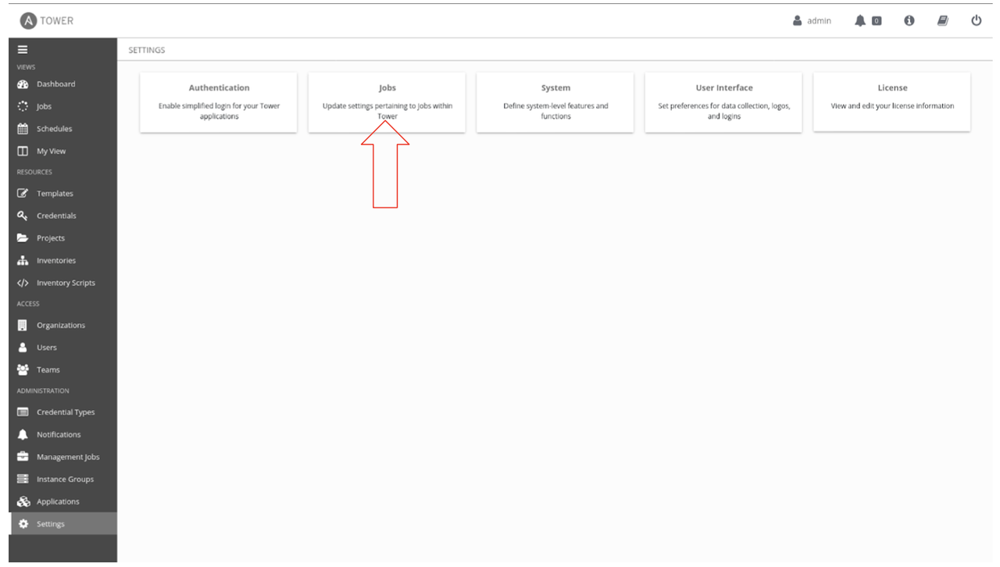
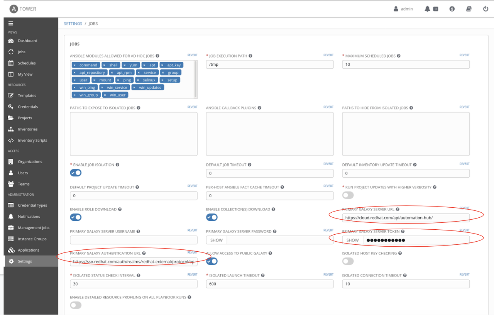
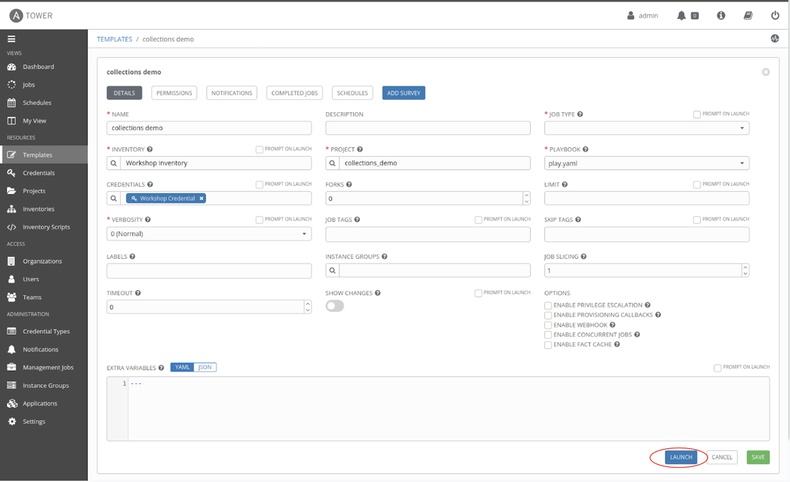

Installing and using collections on Ansible Tower
Installing and using collections on Ansible Tower
Ansible Collections are the new way to distribute and manage content. Ansible content can be modules, roles, plugins and even Ansible Playbooks. In my previous blog, I provide a walkthrough of using Ansible Collections from Ansible Galaxy and Automation Hub. Ansible Galaxy is the upstream community for sharing Ansible Collections. Any community user can create a namespace and share content with anyone. Access to Automation Hub is included with a Red Hat Ansible Automation Platform subscription. Automation Hub only contains fully supported and certified content from Red Hat and our partners.
In this blog post we'll walk through using Ansible Collections with Ansible Tower, part of the Red Hat Ansible Automation Platform. There are a few differences between using command-line Ansible for syncing with Ansible Galaxy or the Automation Hub versus using Ansible Tower. However, it is really easy and I will show you how!
Accessing collections content from Automation Hub and Galaxy from Ansible Tower.
If the Ansible Collections are included in your project you do not need to authenticate to Automation Hub. This method is where you are downloading dynamically using a requirements file. In general there are three strategies for using Ansible Collections with your environment:
- Install the collection into your runtime environment or virtual environment
- Provide the collection as part of your SCM tree
- Use a requirements file
When accessing content from Automation Hub, the authentication token and authentication URL configuration has to be made in Ansible Tower's settings.
Note: Even if you have the authorization details in your ansible.cfg file within the project repo, it will not be picked up by Ansible Tower. You will need to enter these details in the Ansible Tower settings
In order to do this, navigate to the Settings > Jobs sidebar link from the Ansible Tower administration section.

Click on Jobs and update the following fields:
- PRIMARY GALAXY SERVER URL:
https://cloud.redhat.com/api/automation-hub/ - PRIMARY GALAXY AUTHENTICATION URL:
https://sso.redhat.com/auth/realms/redhat-external/protocol/openid-connect/token - PRIMARY GALAXY SERVER TOKEN:
xxxxxxxxxxxxxxxxxxxxxxxxx......
Red Hat recommends using Automation Hub for your primary Galaxy Server URL to ensure you are using certified content that is fully supported via your Red Hat Ansible Automation Platform subscription

This is the only step you need to do in Ansible Tower in order to download the certified collection from Automation Hub which was defined in the collections/requirements.yml file.
The playbook is invoked via a job template as usual.

Launching this job template results in the collections being pulled down from Automation Hub and Galaxy and invoking modules made available through those collections.

Conclusion
Ansible Collections introduce a way to modularize and package automation content effectively. The Red Hat Automation Hub hosts certified collections that are validated and supported by Red Hat. Ansible Galaxy hosts community contributed collections. Customers can access collections from both content repositories. I think of collections as superchargers to the "batteries included" approach that Ansible takes. It up-levels the nuances involved in building out automation, allowing users to plug-n-play the latest and greatest automation content being built by certified partners and the community.